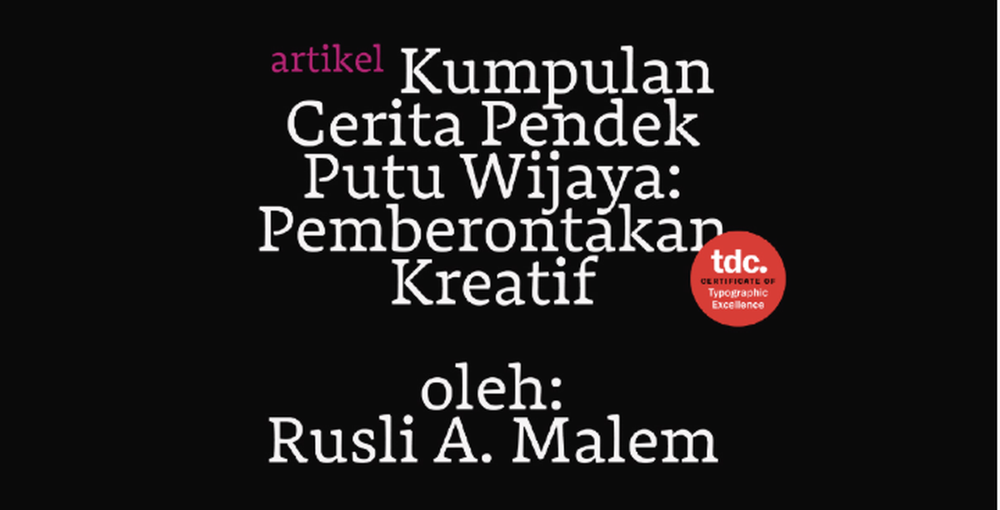

D07-12026-10-11 · TDC · Joyce 发图
黑底上的红印章
Type Directors Club 优秀奖文章头图。品红 kicker + 白衬线标题 + 红色圆形徽章，全居中大留白。
#0A0A0A 黑底
#B82878 品红
#D23A3A 印章红
能偷的
- 一枚红印章 = 证书感：圆形徽章 + 一圈小字，放在任何标题旁都成立
- 黑底是印章的舞台：红印章在黑底上最跳，白底上则平庸
- 品红 kicker：小写无衬线品红，三重反差和白衬线标题拉开层级
- 全居中 + 大留白：证书感需要"庄重"，居中是最便宜的庄重
不要学的
印章一年用一次是"获奖"，天天用是"贴纸"——稀缺性是它价值的一半。徽章里的字移动端看不清，徽章认形状不认字。